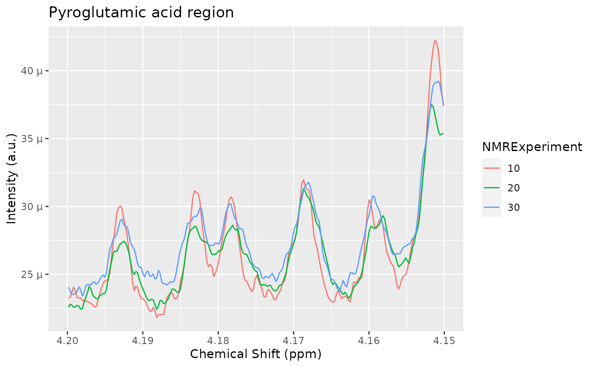
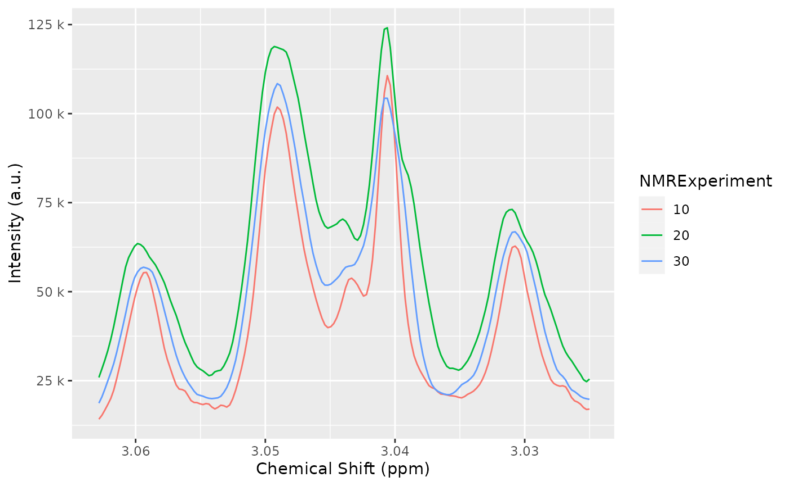
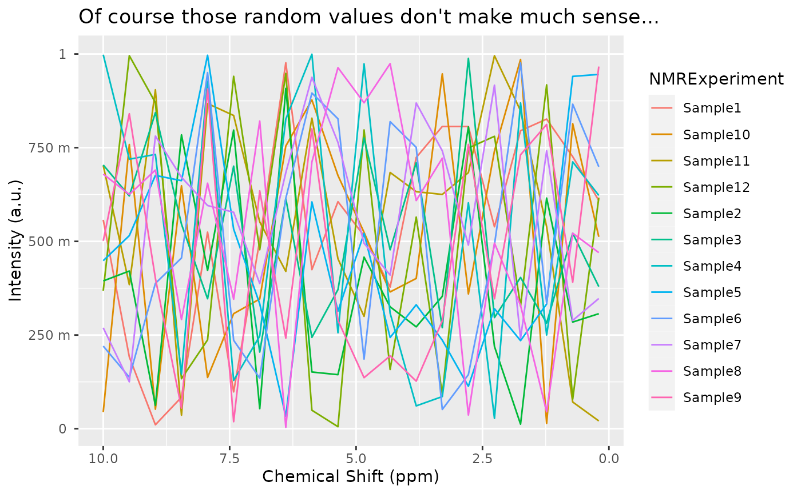

Introduction to AlpsNMR
AlpsNMR authors
2022-06-21
Source:vignettes/Vig01-introduction-to-alpsnmr.Rmd
Vig01-introduction-to-alpsnmr.RmdAbstract
An introduction to the AlpsNMR package, showing the most relevant functions and a proposed workflow. This includes loading bruker NMR samples, adding sample annotations, preprocessing the spectra, detecting outliers, detecting peaks, aligning the samples and integrating the peaks to build a peak table.
Getting started
The AlpsNMR package has most of its functions prefixed
with nmr_. The main reason for this is to avoid conflicts
with other packages. Besides, it helps for autocompletion: Most coding
environments such as RStudio will let you see most of the function names
by typing nmr_ followed by pressing the tab key.
This vignette assumes some basic knowledge of NMR and data analysis, and some basic R programming.
We will start by loading AlpsNMR along some convenience
packages:
##
## Attaching package: 'dplyr'## The following objects are masked from 'package:stats':
##
## filter, lag## The following objects are masked from 'package:base':
##
## intersect, setdiff, setequal, union## Loading required package: future##
## Attaching package: 'AlpsNMR'## The following object is masked from 'package:stats':
##
## filterEnable parallellization
This package is able to parallellize several functions through the
use of the BiocParallel package. Whether to parallelize or
not is left to the user that can control the parallellization
registering backends. Please check
vignette("Introduction_To_BiocParallel", package = "BiocParallel").
Data: The MeOH_plasma_extraction dataset
To explore the basics of the AlpsNMR package, we have included four NMR samples acquired in a 600 MHz Bruker instrument bundled with the package. The samples are pooled quality control plasma samples, that were extracted with methanol. They only contain small molecules.
If you have installed this package, you can obtain the directory where the samples are with the command:
MeOH_plasma_extraction_dir <- system.file("dataset-demo", package = "AlpsNMR")
MeOH_plasma_extraction_dir## [1] "/__w/_temp/Library/AlpsNMR/dataset-demo"The demo directory includes three zipped Bruker samples and a dummy Excel metadata file:
list.files(MeOH_plasma_extraction_dir)## [1] "10.zip" "20.zip" "30.zip"
## [4] "dummy_metadata.xlsx" "README.txt"Since these are quality control samples, the metadata is a dummy table:
MeOH_plasma_extraction_xlsx <- file.path(MeOH_plasma_extraction_dir, "dummy_metadata.xlsx")
annotations <- readxl::read_excel(MeOH_plasma_extraction_xlsx)
annotations## # A tibble: 3 × 3
## NMRExperiment SubjectID TimePoint
## <chr> <chr> <chr>
## 1 10 Ana baseline
## 2 20 Ana 3 months
## 3 30 Elia baselineLoading samples
The function to read samples is called
nmr_read_samples(). It expects a character vector with the
samples to load that can be paths to directories of Bruker format
samples or paths to JDX files.
Additionally, this function can filter by pulse sequences (e.g. load only NOESY samples) or loading only metadata.
zip_files <- fs::dir_ls(MeOH_plasma_extraction_dir, glob = "*.zip")
zip_files## /__w/_temp/Library/AlpsNMR/dataset-demo/10.zip
## /__w/_temp/Library/AlpsNMR/dataset-demo/20.zip
## /__w/_temp/Library/AlpsNMR/dataset-demo/30.zip
dataset <- nmr_read_samples(sample_names = zip_files)
dataset## An nmr_dataset (3 samples)If your samples happen to be in different folders per class, AlpsNMR provides convenience functions to read them as well. With this example:
- your_dataset/
+ control/
* 10/
* 20/
* 30/
+ mutated/
* 10/
* 20/
* 30/You could use:
dataset <- nmr_read_samples_dir(c("your_dataset/control", "your_dataset/mutated"))
datasetIf after reading the ?nmr_read_samples page you still
have issues, feel free to open an issue at [https://github.com/sipss/AlpsNMR/issues] and ask for
clarification.
Adding annotations
We can embed the external annotations we loaded above into the dataset:
dataset <- nmr_meta_add(dataset, metadata = annotations, by = "NMRExperiment")And retrieve them from the dataset:
nmr_meta_get(dataset, groups = "external")## # A tibble: 3 × 3
## NMRExperiment SubjectID TimePoint
## <chr> <chr> <chr>
## 1 10 Ana baseline
## 2 20 Ana 3 months
## 3 30 Elia baselineIf you want to learn more about sample metadata (including
acquisition and FID processing parameters), as well as more complex ways
of adding annotations, check out the
vignette("Vig02-handling-metadata-and-annotations", package = "AlpsNMR").
Interpolation
1D NMR samples can be interpolated together, in order to arrange all the spectra into a matrix, with one row per sample. Here we choose the range of ppm values that we want to include in further analyses.
dataset <- nmr_interpolate_1D(dataset, axis = c(min = -0.5, max = 10))If the axis = NULL then the ppm axis is autodetected
from the samples.
See nmr_interpolate_1D() for further reference on the
axis options.
Plotting samples
Plotting many spectra with so many points is quite expensive so it is possible to include only some regions of the spectra or plot only some samples.

See
vignette("Vig03-plotting-samples", package="AlpsNMR") for
more advanced plot options, or having interactive plots.
Exclude regions
Some regions can easily be excluded from the spectra with
nmr_exclude_region():
regions_to_exclude <- list(water = c(4.6, 5), methanol = c(3.33, 3.39))
dataset <- nmr_exclude_region(dataset, exclude = regions_to_exclude)
plot(dataset, chemshift_range = c(4.2, 5.5))
Filter samples
Maybe we just want to analyze a subset of the data, e.g., only a class group or a particular gender. We can filter some samples according to their metadata as follows:
samples_10_20 <- filter(dataset, SubjectID == "Ana")
nmr_meta_get(samples_10_20, groups = "external")## # A tibble: 2 × 3
## NMRExperiment SubjectID TimePoint
## <chr> <chr> <chr>
## 1 10 Ana baseline
## 2 20 Ana 3 monthsRobust PCA for outlier detection
The AlpsNMR package includes robust PCA analysis for outlier detection.
pca_outliers_rob <- nmr_pca_outliers_robust(dataset, ncomp = 3)
nmr_pca_outliers_plot(dataset, pca_outliers_rob)
Baseline removal
Spectra may display an unstable baseline, specially when processing blood/fecal samples.
The peak detection and integration algorithms benefit from having an estimation of the baseline, so it is advisable to compute it first and check it fits as expected.
See before:

Estimate the baseline:
dataset <- nmr_baseline_estimation(dataset, lambda = 9, p = 0.01)And after:
# TODO: Simplify this plot
spectra_to_plot <- tidy(dataset, chemshift_range = c(3.5, 3.8), columns = "NMRExperiment")
baseline_to_plot <- tidy(dataset, chemshift_range = c(3.5, 3.8), columns = "NMRExperiment", matrix_name = "data_1r_baseline")
ggplot(mapping = aes(x = chemshift, y = intensity, color = NMRExperiment)) +
geom_line(data = spectra_to_plot) +
geom_line(data = baseline_to_plot, linetype = "dashed") +
facet_wrap(~NMRExperiment, ncol = 1)
Peak detection
The peak detection is performed on short spectra segments using a
continuous wavelet transform. See ?nmr_detect_peaks for
more information.
Our current approach relies on the use of the baseline threshold
(baselineThresh) automatically calculated (see
?nmr_baseline_threshold) and the Signal to Noise Threshold
(SNR.Th) to discriminate valid peaks from noise.
The combination of the baselineThresh and the
SNR.Th optimizes the number of actual peaks from noise.
The advantage of the SNR.Th method is that it estimates
the noise level on each spectra region independently, so in practice it
can be used as a dynamic baseline threshold level.
baselineThresh <- nmr_baseline_threshold(dataset, range_without_peaks = c(9.5, 10))
nmr_baseline_threshold_plot(dataset, baselineThresh)
peak_list <- nmr_detect_peaks(
dataset,
nDivRange_ppm = 0.1,
scales = seq(1, 16, 2),
baselineThresh = baselineThresh,
SNR.Th = 3
)We can get an overview of the number of peaks we detect on each sample and each chemical shift region:
nmr_detect_peaks_plot_overview(peak_list)
We can explore in a more detailed way the detected peaks:
nmr_detect_peaks_plot(dataset, peak_list, NMRExperiment = "10", chemshift_range = c(3, 3.3))
Let’s the detected peaks in a smaller region across samples:
peak_list_in_range <- filter(peak_list, ppm > 3.22, ppm < 3.24)
peak_list_in_range## peak_id NMRExperiment sample_idx ppm pos intensity ppm_infl_min
## 1 Peak0236 10 1 3.232010 16281 239459.2 3.230412
## 2 Peak0237 10 1 3.238199 16308 358753.1 3.236737
## 3 Peak0738 20 2 3.232468 16283 291094.0 3.230171
## 4 Peak0739 20 2 3.238429 16309 399655.6 3.236724
## 5 Peak1248 30 3 3.232010 16281 243670.0 3.230154
## 6 Peak1249 30 3 3.238199 16308 464834.7 3.236401
## ppm_infl_max gamma_ppb area norm_rmse
## 1 3.233587 1.800710 1271.506 0.13237240
## 2 3.239503 1.228597 1357.638 0.08983207
## 3 3.233466 2.706811 2241.481 0.20766149
## 4 3.239808 1.795611 1985.580 0.23675934
## 5 3.233357 2.318516 1704.133 0.08884300
## 6 3.239504 1.792865 2543.183 0.12105599
nmr_detect_peaks_plot_peaks(dataset, peak_list, peak_ids = peak_list_in_range$peak_id)
Spectra alignment
To align the sample, we use the nmr_align function,
which in turn uses a hierarchical clustering method (see
?nmr_align for further details).
The maxShift_ppm limits the maximum shift allowed for
the spectra.
NMRExp_ref <- nmr_align_find_ref(dataset, peak_list)
message("Your reference is NMRExperiment ", NMRExp_ref)## Your reference is NMRExperiment 20
dataset_align <- nmr_align(dataset, peak_list, NMRExp_ref, maxShift_ppm = 0.0015, acceptLostPeak = FALSE)

cowplot::plot_grid(
plot(dataset, chemshift_range = c(3.22, 3.25)) + theme(legend.position = "none"),
plot(dataset_align, chemshift_range = c(3.22, 3.25)) + theme(legend.position = "none")
)
Normalization
There are multiple normalization techniques available. The most
strongly recommended is the pqn normalization, but it may
not be fully reliable when the number of samples is small, as it needs a
computation of the median spectra. Nevertheless, it is possible to
compute it:
dataset_norm <- nmr_normalize(dataset_align, method = "pqn")## Warning in norm_pqn(samples[["data_1r"]]): The Probabalistic Quotient
## Normalization requires several samples to compute the median spectra. Your
## number of samples is lowThe AlpsNMR package offers the possibility to extract
additional normalization information with
nmr_normalize_extra_info(dataset), to explore the
normalization factors applied to each sample:
The plot shows the dispersion with respect to the median of the normalization factors, and can highlight samples with abnormally large or small normalization factors.
diagnostic <- nmr_normalize_extra_info(dataset_norm)
diagnostic$norm_factor## NMRExperiment norm_factor norm_factor_norm
## 1 10 1066278718 0.8163096
## 2 20 1474705889 1.1289886
## 3 30 1306218600 1.0000000
diagnostic$plot
Peak integration
1. Integration based on peak center and width
If we want to integrate the whole spectra, we need ppm from the
peak_table. See Peak detection section. The
function nmr_integrate_peak_positions generates a new
nmr_dataset_1D object containing the integrals from the
peak_table (ppm values corresponding to detected
peaks).
peak_table_integration = nmr_integrate_peak_positions(
samples = dataset_norm,
peak_pos_ppm = peak_list$ppm[peak_list$NMRExperiment == NMRExp_ref],
peak_width_ppm = 0.006)
peak_table_integration = get_integration_with_metadata(peak_table_integration)We can also integrate with a specific peak position and some arbitrary width:
nmr_data(
nmr_integrate_peak_positions(samples = dataset_norm,
peak_pos_ppm = c(4.1925, 4.183, 4.1775, 4.17),
peak_width_ppm = 0.006)
)## ppm_4.1925 ppm_4.1830 ppm_4.1775 ppm_4.1700
## 10 1.547383e-07 1.598781e-07 1.591258e-07 1.627404e-07
## 20 1.520488e-07 1.584862e-07 1.604103e-07 1.634603e-07
## 30 1.599969e-07 1.656474e-07 1.659011e-07 1.675492e-072. Integration based on peak boundaries
Imagine we only want to integrate the four peaks corresponding to the pyroglutamic acid:
pyroglutamic_acid_region <- c(4.15, 4.20)
plot(dataset_norm, chemshift_range = pyroglutamic_acid_region) +
ggplot2::ggtitle("Pyroglutamic acid region")
We define the peak regions and integrate them. Note how we can correct the baseline or not. If we correct the baseline, the limits of the integration will be connected with a straight line and that line will be used as the baseline, that will be subtracted.
pyroglutamic_acid <- list(pyroglutamic_acid1 = c(4.19, 4.195),
pyroglutamic_acid2 = c(4.18, 4.186),
pyroglutamic_acid3 = c(4.175, 4.18),
pyroglutamic_acid4 = c(4.165, 4.172))
regions_basel_corr_ds <- nmr_integrate_regions(dataset_norm, pyroglutamic_acid, fix_baseline = TRUE)
regions_basel_corr_matrix <- nmr_data(regions_basel_corr_ds)
regions_basel_corr_matrix## pyroglutamic_acid1 pyroglutamic_acid2 pyroglutamic_acid3 pyroglutamic_acid4
## 10 1.260167e-08 1.460490e-08 8.465197e-09 2.605835e-08
## 20 9.155545e-09 8.057965e-09 5.641613e-09 2.393440e-08
## 30 9.543796e-09 1.143418e-08 8.645361e-09 2.300838e-08
regions_basel_not_corr_ds <- nmr_integrate_regions(dataset_norm, pyroglutamic_acid, fix_baseline = FALSE)
regions_basel_not_corr_matrix <- nmr_data(regions_basel_not_corr_ds)
regions_basel_not_corr_matrix## pyroglutamic_acid1 pyroglutamic_acid2 pyroglutamic_acid3 pyroglutamic_acid4
## 10 1.276896e-07 1.598781e-07 1.362096e-07 1.920284e-07
## 20 1.249801e-07 1.584862e-07 1.367893e-07 1.968522e-07
## 30 1.313885e-07 1.656474e-07 1.417177e-07 1.998049e-07We may plot the integral values to explore variation based on the baseline subtraction.
dplyr::bind_rows(
regions_basel_corr_matrix %>%
as.data.frame() %>%
tibble::rownames_to_column("NMRExperiment") %>%
tidyr::gather("metabolite_peak", "area", -NMRExperiment) %>%
dplyr::mutate(BaselineCorrected = TRUE),
regions_basel_not_corr_matrix %>%
as.data.frame() %>%
tibble::rownames_to_column("NMRExperiment") %>%
tidyr::gather("metabolite_peak", "area", -NMRExperiment) %>%
dplyr::mutate(BaselineCorrected = FALSE)
) %>% ggplot() + geom_point(aes(x = NMRExperiment, y = area, color = metabolite_peak)) +
facet_wrap(~BaselineCorrected)
Identification
After applying any feature selection or machine learning, Alps allows
the identification of features of interest through
nmr_identify_regions_blood. The function gives 3
posibilities sorted by the most probable metabolite (see
nmr_identify_regions_blood for details).
ppm_to_assign <- c(4.060960203, 3.048970634,2.405935596,0.990616851,0.986520147, 1.044258467)
identification <- nmr_identify_regions_blood (ppm_to_assign)Free experimentation
Getting the spectra and manipulating it manually
Besides all those techniques, you can easily implement your own. You
can extract the raw matrix and manipulate it at will. As long as you
don’t permute the rows, you can always replace the raw matrix of the
nmr_dataset_1D object through the nmr_data
function:
full_spectra_matrix <- nmr_data(dataset)
full_spectra_matrix[1:3, 1:6] # change it as you wish## -0.5 -0.499770761061104 -0.499541522122207 -0.499312283183311
## 10 1253.623 1019.758 659.0876 985.4680
## 20 1833.057 1966.363 1765.4667 1502.6491
## 30 1602.275 1298.642 916.7640 911.0389
## -0.499083044244415 -0.498853805305519
## 10 1229.603 941.238
## 20 1884.852 2394.285
## 30 1097.545 1077.822
nmr_data(dataset) <- full_spectra_matrix # Rewrite the matrixCreating an nmr_dataset_1D object from a matrix
You can also create an nmr_dataset_1D object from
scratch with the new_nmr_dataset_1D function:
nsamp <- 12
npoints <- 20
# Create a random spectra matrix
dummy_ppm_axis <- seq(from = 0.2, to = 10, length.out = npoints)
dummy_spectra_matrix <- matrix(runif(nsamp*npoints), nrow = nsamp, ncol = npoints)
metadata <- list(external = data.frame(NMRExperiment = paste0("Sample", 1:12),
DummyClass = c("a", "b"),
stringsAsFactors = FALSE))
your_custom_nmr_dataset_1D <- new_nmr_dataset_1D(ppm_axis = dummy_ppm_axis,
data_1r = dummy_spectra_matrix,
metadata = metadata)
your_custom_nmr_dataset_1D## An nmr_dataset_1D (12 samples)
plot(your_custom_nmr_dataset_1D) +
ggtitle("Of course those random values don't make much sense...")
Final thoughts
This vignette shows many of the features of the package, some features have room for improvement, others are not fully described, and the reader will need to browse the documentation. Hopefully it is a good starting point for using the package.
## R version 4.2.0 (2022-04-22)
## Platform: x86_64-pc-linux-gnu (64-bit)
## Running under: Ubuntu 20.04.4 LTS
##
## Matrix products: default
## BLAS: /usr/lib/x86_64-linux-gnu/openblas-pthread/libblas.so.3
## LAPACK: /usr/lib/x86_64-linux-gnu/openblas-pthread/liblapack.so.3
##
## locale:
## [1] LC_CTYPE=en_US.UTF-8 LC_NUMERIC=C
## [3] LC_TIME=en_US.UTF-8 LC_COLLATE=en_US.UTF-8
## [5] LC_MONETARY=en_US.UTF-8 LC_MESSAGES=en_US.UTF-8
## [7] LC_PAPER=en_US.UTF-8 LC_NAME=C
## [9] LC_ADDRESS=C LC_TELEPHONE=C
## [11] LC_MEASUREMENT=en_US.UTF-8 LC_IDENTIFICATION=C
##
## attached base packages:
## [1] stats graphics grDevices utils datasets methods base
##
## other attached packages:
## [1] AlpsNMR_3.7.1 future_1.26.1 BiocParallel_1.30.3
## [4] readxl_1.4.0 ggplot2_3.3.6 dplyr_1.0.9
## [7] BiocStyle_2.24.0
##
## loaded via a namespace (and not attached):
## [1] matrixStats_0.62.0 fs_1.5.2 httr_1.4.3
## [4] RColorBrewer_1.1-3 rprojroot_2.0.3 doRNG_1.8.2
## [7] tools_4.2.0 bslib_0.3.1 utf8_1.2.2
## [10] R6_2.5.1 colorspace_2.0-3 withr_2.5.0
## [13] tidyselect_1.1.2 gridExtra_2.3 MassSpecWavelet_1.62.0
## [16] compiler_4.2.0 progressr_0.10.1 rvest_1.0.2
## [19] textshaping_0.3.6 cli_3.3.0 SparseM_1.81
## [22] xml2_1.3.3 desc_1.4.1 labeling_0.4.2
## [25] bookdown_0.27 sass_0.4.1 scales_1.2.0
## [28] mvtnorm_1.1-3 randomForest_4.7-1.1 quadprog_1.5-8
## [31] pkgdown_2.0.4 systemfonts_1.0.4 stringr_1.4.0
## [34] digest_0.6.29 rmarkdown_2.14 pkgconfig_2.0.3
## [37] htmltools_0.5.2 parallelly_1.32.0 itertools_0.1-3
## [40] fastmap_1.1.0 highr_0.9 rlang_1.0.2
## [43] impute_1.70.0 jquerylib_0.1.4 generics_0.1.2
## [46] farver_2.1.0 jsonlite_1.8.0 speaq_2.7.0
## [49] magrittr_2.0.3 Matrix_1.4-1 Rcpp_1.0.8.3
## [52] munsell_0.5.0 fansi_1.0.3 RcppZiggurat_0.1.6
## [55] lifecycle_1.0.1 stringi_1.7.6 yaml_2.3.5
## [58] MASS_7.3-57 plyr_1.8.7 grid_4.2.0
## [61] parallel_4.2.0 listenv_0.8.0 ggrepel_0.9.1
## [64] doSNOW_1.0.20 crayon_1.5.1 lattice_0.20-45
## [67] cowplot_1.1.1 knitr_1.39 pillar_1.7.0
## [70] igraph_1.3.2 rngtools_1.5.2 corpcor_1.6.10
## [73] reshape2_1.4.4 codetools_0.2-18 mixOmics_6.20.0
## [76] lpSolve_5.6.15 glue_1.6.2 evaluate_0.15
## [79] data.table_1.14.2 BiocManager_1.30.18 missForest_1.5
## [82] foreach_1.5.2 vctrs_0.4.1 cellranger_1.1.0
## [85] gtable_0.3.0 purrr_0.3.4 tidyr_1.2.0
## [88] cachem_1.0.6 xfun_0.31 limSolve_1.5.6
## [91] Rfast_2.0.6 RSpectra_0.16-1 baseline_1.3-1
## [94] ragg_1.2.2 pcaPP_2.0-1 rARPACK_0.11-0
## [97] signal_0.7-7 tibble_3.1.7 snow_0.4-4
## [100] iterators_1.0.14 memoise_2.0.1 ellipse_0.4.3
## [103] cluster_2.1.3 globals_0.15.0 ellipsis_0.3.2